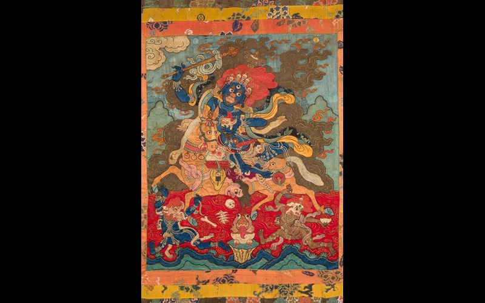

Photo tour of Mongolian 20th century popular paintings. Every has historical and religious connection with the country. In almost every Mongolian household, at least they have one of the paintings in their home.
"The Red Monster"
The Red Monster is one of God figure in buddhism. The most common religion practice in Mongolia is Buddhism and 'the Red monster's painting is well known and common in Mongolian household. In Buddhism, if you worship this deity every day, you will not be disturbed by devils.